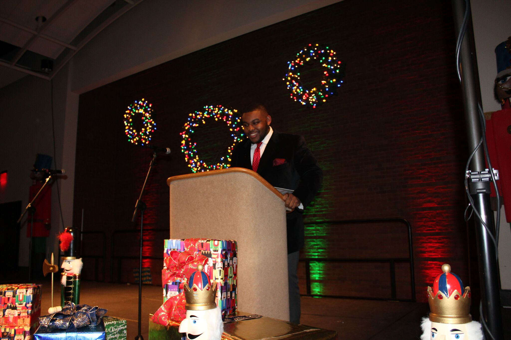

Marvin Crumbs
Visionary. Innovator. Exagerrator
About Marvin

Born and raised in Columbus, Georgia, Marvin developed an early interest in STEM, specifically Computer Science. Since middle school, Marvin has been active in his community in several ways. He has recorded several hours with Columbus Parks and Recreation, where he helped children involved in STEM Projects and Competitions. He has also worked with the Georgia Game Developers Association, HackGT, and Hi Rez Studios.
Skills